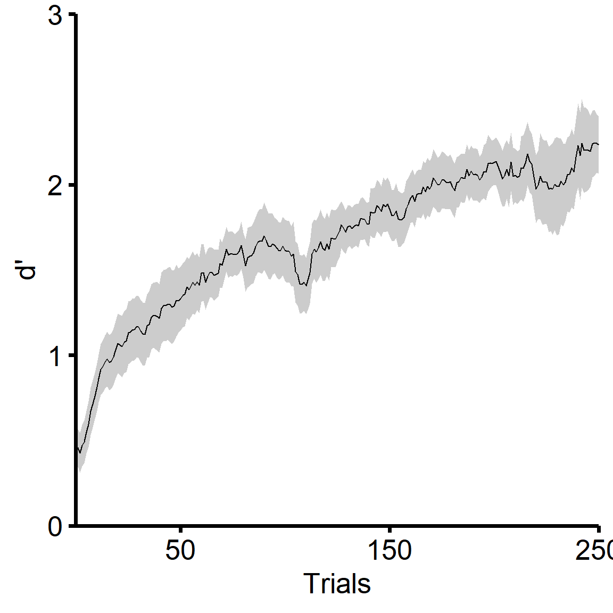
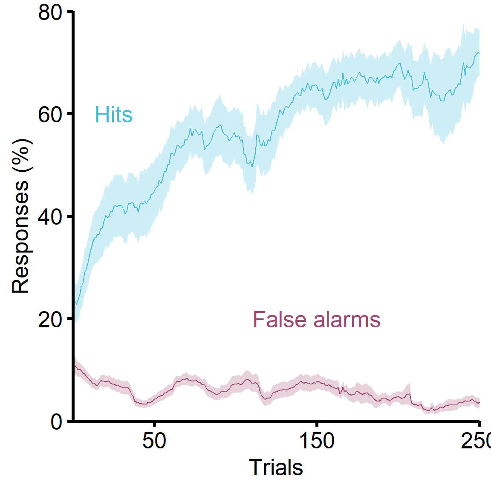

# Libraries and plotting parameters
library(nlme)
library(multcomp)
library(ggplot2)
library(dplyr)
library(tidyr)
library(lsmeans)
library(glmmTMB)
library(DHARMa)
library(car)
library(ggpubr)
library(reshape2)
source('./r_theme.r', echo=F)
theme_set(theme_mml(base_size = 20))
# Some global plot parameters if modification is needed
LINE_THICKNESS = 1
ERRORBAR_THICKNESS = LINE_THICKNESS/2
INDIVIDUAL_DATAPOINT_LINE = LINE_THICKNESS/1.5
SMALL_PLOTS_LINE_THICKNESS = LINE_THICKNESS/3
cbPalette = c("#999999", "#E69F00", "#56B4E9", "#009E73", "#F0E442", "#0072B2", "#D55E00", "#CC79A7", "#d55e00")
# Create the notin operator
`%notin%` <- Negate(`%in%`)
response_bias = function(Hit, Miss, Reject, False_alarm) {
hr = (Hit + 0.5) / (Hit + Miss + 1)
far = (False_alarm+0.5)/(False_alarm+Reject+1)
return( -0.5 * (qnorm(hr) + qnorm(far)) )
}
get_dprime = function(hr, far) {
return(
qnorm(hr) - qnorm(far)
)
}
df = read.csv('./Data/Behavior_proceduralTraining/Behavior_df_allSubjects_proceduralTraining_dailySummary.csv')
# Some descriptives
df_grouped = df %>% group_by(Subject) %>%
summarise(Training_days = max(Day.x),
Total_trials = sum(N_trials.x))
print(paste('Minimum number of trials for learning:', min(df_grouped$Total_trials)))## [1] "Minimum number of trials for learning: 41"print(paste('Maximum number of trials for learning:', max(df_grouped$Total_trials)))## [1] "Maximum number of trials for learning: 953"print(paste('Median number of trials for learning:', median(df_grouped$Total_trials)))## [1] "Median number of trials for learning: 229"print(paste('Median number of days for learning:', median(df_grouped$Total_trials)))## [1] "Median number of days for learning: 229"df = read.csv('./Data/Behavior_proceduralTraining/Behavioral_df_allSubjects_proceduralTraining_10trialSlidingScale.csv')
graph_data = df
# Bring FA to d' scale for dual-axis
scale_factor = 30
graph_data$FA_rate_secAxis = graph_data$FA_rate / scale_factor
graph_data$Hit_rate_secAxis = graph_data$Hit_rate / scale_factor
graph_means = graph_data %>% group_by(Trial_block) %>%
summarise(
D_prime_mean = mean(D_prime, na.rm=T),
D_prime_se = sd(D_prime, na.rm=T) / sqrt(n()-1),
FAR_mean = mean(FA_rate, na.rm=T),
FAR_se = sd(FA_rate, na.rm=T) / sqrt(n()-1),
HR_mean = mean(Hit_rate, na.rm=T),
HR_se = sd(Hit_rate, na.rm=T) / sqrt(n()-1)
)
y_axis = seq(0, 3, 1)
x_axis = seq(50, 250, 100)
p = ggplot(data=graph_data, aes(x=Trial_block, group=Subject)) +
geom_ribbon(data = graph_means, aes(x=Trial_block, y=D_prime_mean, ymax=D_prime_mean+D_prime_se, ymin=D_prime_mean-D_prime_se, group=1), alpha=0.25, color=NA) +
stat_summary(aes(y=D_prime, group=1), fun.y="mean", geom="line", na.rm = T, alpha = 1, size=LINE_THICKNESS/2) +
scale_y_continuous(breaks=y_axis, expand=c(0, 0)) +
scale_x_continuous(breaks=x_axis, expand=c(0, 0)) +
coord_cartesian(ylim = c(min(y_axis), max(y_axis)),
xlim = c(0, max(x_axis))) +
xlab('Trials') +
ylab('d\'') +
theme(legend.position = 'none')
p
far_color = '#9E4770'
hr_color = '#40BCD8'
y_axis = seq(0, 80, 20)
x_axis = seq(50, 250, 100)
p = ggplot(data=graph_data, aes(x=Trial_block, group=Subject)) +
# FA
geom_ribbon(data = graph_means, aes(x=Trial_block, y=FAR_mean, ymax=FAR_mean+FAR_se, ymin=FAR_mean-FAR_se, group=1), alpha=0.25, color=NA, fill=far_color) +
stat_summary(aes(y=FA_rate, group=1), fun.y="mean", geom="line", na.rm = T, alpha = 1, size=LINE_THICKNESS/2, color=far_color) +
# HR
geom_ribbon(data = graph_means, aes(x=Trial_block, y=HR_mean, ymax=HR_mean+HR_se, ymin=HR_mean-HR_se, group=1), alpha=0.25, color=NA, fill=hr_color) +
stat_summary(aes(y=Hit_rate, group=1), fun.y="mean", geom="line", na.rm = T, alpha = 1, size=LINE_THICKNESS/2, color=hr_color) +
annotate("text", x=150, y=20, label='False alarms', color=far_color, size=7) +
annotate("text", x=25, y=60, label='Hits', color=hr_color, size=7) +
scale_y_continuous(breaks=y_axis, expand=c(0, 0)) +
scale_x_continuous(breaks=x_axis, expand=c(0, 0)) +
coord_cartesian(ylim = c(min(y_axis), max(y_axis)),
xlim = c(0, max(x_axis))) +
xlab('Trials') +
ylab('Responses (%)') +
theme(legend.position = 'none')
p